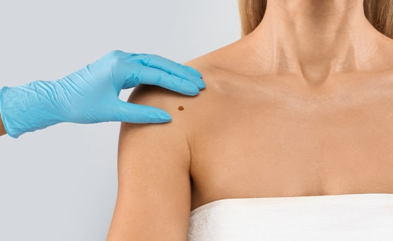
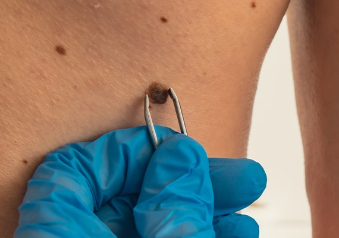
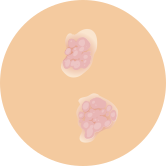
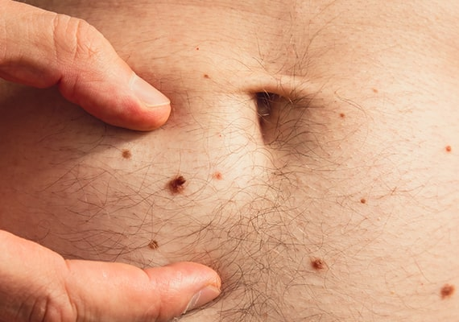
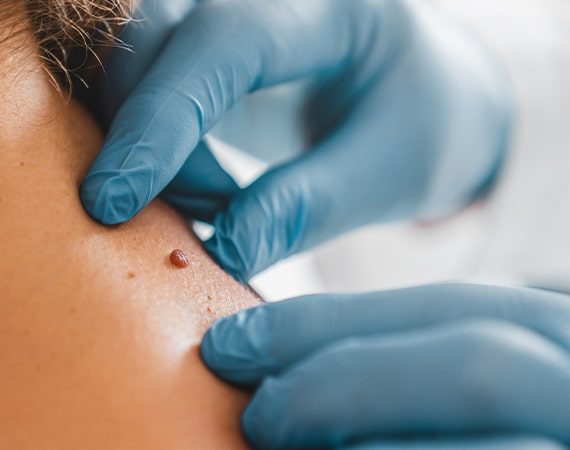
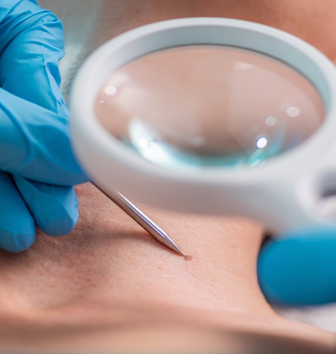

Need Help With Skin Tags?
Contact our skin tag removal clinic in London today. Our dermatologists are experts in fast and effective removal with minimal scarring. Fill in the enquiry form or call us on 0207 467 3720 to get started.


Skin tags are small flesh-coloured, pink, or brown growths that appear on the skin, usually due to friction. They present no medical threat, but people often choose to have them removed for cosmetic reasons or due to discomfort. These flaps of skin are very common, particularly on the neck, armpits, and groin. We are one of the UK's leading clinics specialising in treating this condition. Over the past two decades, our dermatologists have performed thousands of procedures for skin tag removal in London. So, if you are suffering from skin tags and would like to receive expert treatment, get in touch with us today.

Skin tags are growths composed of lax collagen (a protein found in our skin) fibres and blood vessels that are encased in skin. These growths affect both men and women and are more commonly found in the elderly, overweight or obese individuals, or people with type 2 diabetes. Skin tags can also affect pregnant women and are thought to develop as a result of changing hormone levels during pregnancy.

Skin tags often grow in folds of skin where there is increased friction as the skin surfaces rub together. Parts of the body more commonly affected by increased friction are the groin, armpits, and neck. This is why skin tags more frequently affect people who are overweight, as there are often more folds of skin due to the increased level of subcutaneous fat. Overweight patients may also be more prone to skin tags on the stomach and back, where these skin folds rub together. In some people, there is no obvious cause for the skin tag. For effective skin tag removal in London, contact our clinic for expert treatment.
Skin tags can not only cause embarrassment and self-consciousness but also pain. Some skin tags have a stalk-like peduncle that makes them stick up from the skin. These can be especially painful if they get twisted, rubbed hard, or caught on clothing. There is also the risk of shaving them accidentally, causing bleeding and scarring. Obese individuals and those with type 2 diabetes mellitus often have numerous skin tags on their bodies, which can cause widespread discomfort. Fortunately, the removal of problematic skin tags can be performed quickly and with minimal pain.

Some people may choose to carry out a skin tag removal procedure themselves at home; however, we strongly advise against this as it can present problems such as bleeding and scarring. Even for small flaps of skin, we recommend seeing a medical professional who can remove the skin tag safely, leaving little evidence behind. Expert treatment is especially important for removing skin tags on the eyelids or genitalia.

At our skin tag removal clinic in London, we stay up-to-date with the latest research on the best methods for removing skin growths and offer our patients the safest, most minimally invasive techniques. Our expert dermatologists provide a choice of treatment options, including cryotherapy and surgical excision, which will be discussed during your detailed consultation to find the best method for your unique case.
This relatively quick and painless technique uses liquid nitrogen to freeze the skin tag. It is a safe and effective method, usually requiring several sessions, with the frozen skin tags typically dropping off in 7-10 days. Cryotherapy involves grasping the stalks of the skin tags with a haemostat (a type of medical tweezer) that has been dipped in nitrogen and holding them for several seconds, which can cause a mild stinging sensation. Your dermatologist may give you a local anaesthetic if you prefer. Multiple skin tags can be treated at one time using this technique, and no dressings need to be applied, although a little swelling and blistering can sometimes occur. However, due to the number of sessions required for cryotherapy of skin tags, at our skin tag removal clinic in London, we usually recommend the quicker option of surgical removal.

Shave excision involves removing the skin tag with a scalpel. Sometimes an electrode is used to achieve a neater finish and make the scar less noticeable. In this treatment method, your dermatologist will usually provide a local anaesthetic so that you feel no pain. Surgical excision can be used to remove many skin tags quickly, all in one day, without the need to return for more treatment. This treatment option is suitable for both small and large growths, with the possibility of minimal scarring, as with all skin tag removal methods.

During your consultation, a dermatologist will examine your growth to confirm that it is a skin tag and not a mole or other condition. The dermatologist will then discuss the best skin tag removal option for you, considering the location of the skin tags among other factors. Other important aspects your doctor will discuss with you when making a decision on when and how to remove your skin tags include:


Following skin tag removal, our practitioners offer high-quality post-operative care to ensure that your wounds heal well and only a faint white scar is left behind. Removal of small skin tags can even leave no scar at all when topical ointments and scar reduction gels are used along with a good skincare regime. Your dermatologist will help you to formulate a skincare plan that is suited to you and will help you to reduce the occurrence of skin tags in the future.

When you book a consultation, your dermatologist will assess the best treatment for your skin tag. This will depend on the size, location, and type of the skin tag. Larger skin tags may require a more intensive treatment, whereas small ones are much quicker and easier to remove. Skin tags can develop for various reasons or may have been present since birth. Your consultant will discuss your medical history, when you first noticed the skin tags, and whether they have grown or changed over time.Most skin tags are easy to remove and require very little downtime (if any) after treatment. We will discuss any possible risks and aftercare plans associated with skin tag removal. We always advise against attempting to remove them yourself, even if they are very small. It is best to have this done by a professional.the number of sessions required for cryotherapy of skin tags, at our skin tag removal clinic in London, we usually recommend the quicker option of surgical removal.

Skin tags do not grow back after removal and can be permanently eliminated with treatment. However, if you are prone to developing skin tags in a particular area, you may experience new ones forming in the future. This tendency can be influenced by factors such as genetics, skin friction, and certain medical conditions like obesity or diabetes. Regular monitoring and professional consultations can help manage and prevent the recurrence of skin tags. If you notice new growths or have concerns about recurring skin tags, our dermatologists are available to provide ongoing support and treatment options tailored to your needs.

The vast majority of skin tags can be removed easily by a medical professional. If your skin tag is in a very sensitive area, such as around the eyes, genital region, or other delicate parts of the body, it may be more challenging. However, our experienced dermatologists are skilled in handling such cases and can discuss the best approach during your initial consultation. During your consultation, we will thoroughly examine the growth to confirm that it is indeed a skin tag and not another condition that might require a different treatment plan. This is crucial because some growths may resemble skin tags but could be other types of lesions or conditions, such as moles or warts, which need specific treatment methods. Our team will ensure that you understand the various skin tag removal options available, including their benefits and any potential risks.
Yes, a consultation is required to confirm that the lesion is a skin tag and to rule out any other skin condition. Your dermatologist will then advise on the most suitable removal method.
We use several methods including cryotherapy (freezing), cauterisation, snip excision, or laser removal. The choice depends on the size, location and number of skin tags.
The procedure is quick and generally well-tolerated. A local anaesthetic may be used for comfort, especially if multiple or larger skin tags are being treated.
Most removals take just a few minutes per tag. You can usually leave the clinic shortly after the procedure with minimal aftercare.
Minor scarring is possible but often minimal, especially with smaller skin tags. Your dermatologist will aim to minimise any cosmetic impact.
Yes, we have experience removing skin tags from delicate and visible areas. Special care is taken to ensure precision and a good cosmetic outcome.
Removed skin tags do not typically return, but new ones can form over time. If you’re prone to them, we can advise on management and preventative care.
Skin tag removal is usually considered a cosmetic procedure and is not typically covered by the NHS or insurance. We offer private treatment with transparent pricing and no long waiting times.
We are conveniently located at 69 Wimpole Street in Central London. For those using the underground, Bond Street Station is just a seven-minute walk away. If you are driving, ample street parking is available. We also provide wheelchair access for individuals requiring it.
Monday - Friday: 9.00 AM - 5.30 PM
Saturday & Sunday: Closed
69 Wimpole Street,
London W1G 8AS.
Contact our skin tag removal clinic in London today. Our dermatologists are experts in fast and effective removal with minimal scarring. Fill in the enquiry form or call us on 0207 467 3720 to get started.